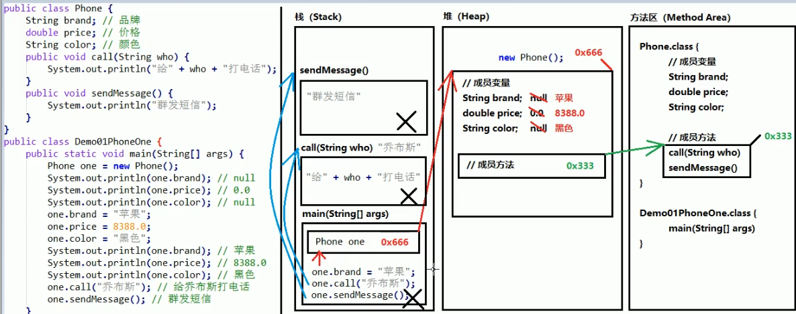
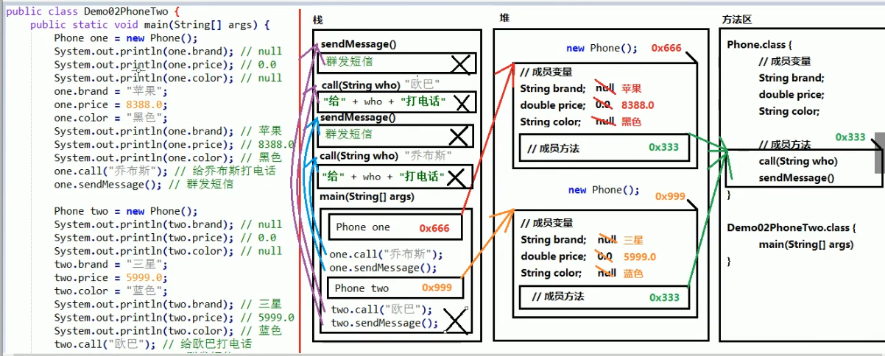
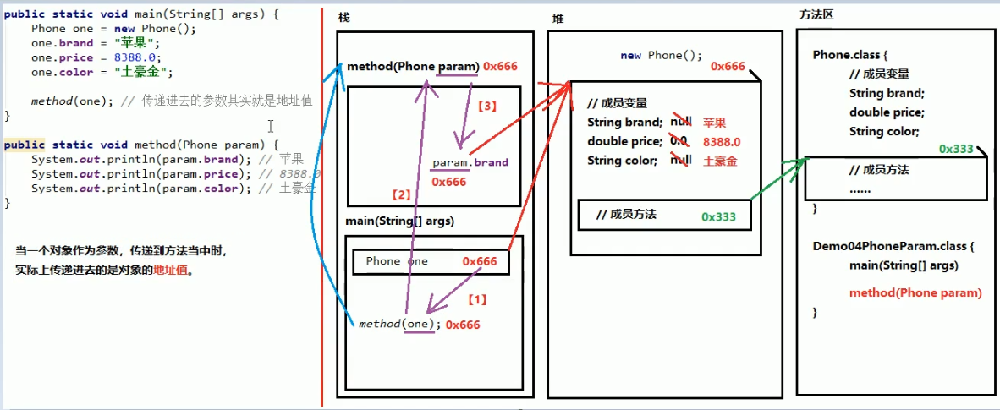
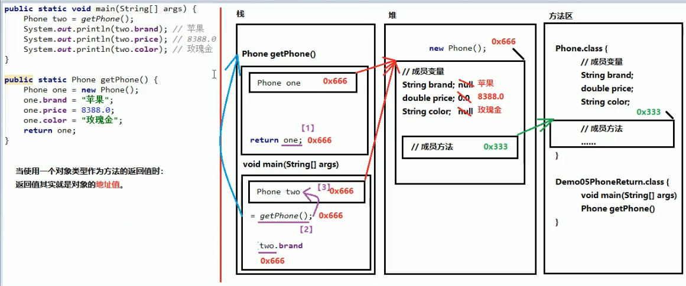

面向过程
每一个具体的步骤都亲力亲为，详细处理每一个细节
面向对象
不关心具体步骤，而是找一个已经具有该功能的人来帮我做事
特点
封装性
继承性
多态性
类
是一组相关属性和行为的集合
成员变量（属性）：该事物的状态信息
成员方法（行为）：该事物能做什么
类是对象的模板，对象是类的实体
类的定义格式
修饰符 class 类名{
}
如何使用类
1.导入包（同一包中可省略）
2.创建 类名称 对象名 = new 类名称();
3.使用 对象名.成员变量 或 对象名.成员方法
成员方法定义格式
修饰符（不加static）返回值类型 方法名(参数类型 参数名){
方法体;
}
一个对象调用一个方法内存图

成员方法保存的是一个地址值
两个对象调用同一个方法内存图

一个引用，作为参数转递到方法

使用对象类型作为方法的返回值

成员变量与局部变量区别
1.定义位置不同：成员变量定义在类中方法外，局部变量定义在方法中
2.作用范围不同：成员变量全类通用，局部变量只能在本方法中使用
3.默认值不同：成员变量根据数据类型不用有不用的默认值，局部变量没有默认值
4.内存位置不同：成员变量在堆内存，局部变量在栈内存
5.生命周期不同：成员变量随着对象的诞生而诞生，随着对象被垃圾回收而消失；局部变量随着方法进栈而诞生，随着方法出栈而消失
封装
方法是一种封装
关键字private也是一种封装
将一些细节信息隐藏起来，对外不可见
private修饰的成员变量不能被其他类直接访问，但可以间接访问：设置一对Getter/Setter方法
this关键字
如果方法的局部变量与成员变量重名时，根据就近原则访问的是方法中的局部变量，如果需要访问本类中的成员变量，格式为 this.成员变量
通过谁调用方法，谁就是this
类的构造方法
专门用来创建对象的方法
格式：
修饰符 类名称 (参数类型 参数名称){
方法体
}
注意事项
1.构造方法没有返回值
2.构造方法的名称要与类名称相同
3.如果没有编写构造方法，那么编译器就会赠送一个无参的构造方法，而该方法的方法体什么都不干
4.一旦编写了至少一个构造方法，编译器就不会赠送构造方法
5.构造方法可以重载
定义一个标准的类
1.每个成员变量都用private修饰
2.为每个成员变量设置一对Getter/Setter
3.编写一个无参的构造方法
4.编写一个全参的构造方法